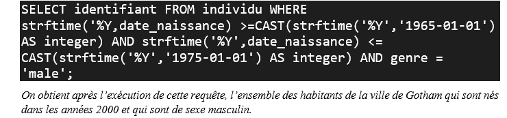

L'objectif principal était de peaufiner notre capacité à traiter et organiser des données provenant de différentes sources et formats (TXT et CSV) de manière à les harmoniser et les regrouper dans un seul fichier. Concrètement dans le contexte, on n'avait à notre disposition six fichiers aux format TXT ou CSV qui contiennent chacun les notes de cent-onze élèves dans une matière. Les données y étaient peu structurées et organisées différemment d'un fichier à l'autre. Notre tâche consistait donc à les harmoniser et regrouper dans un seul fichier.
Les résultats obtenus ont été stocké dans un fichier CSV. Et de plus, nous avons sortie au nom de chaque élève, deux fichiers TXT dont l'un est un bulletin de ses notes et l'autre contient ses points faibles et forts.
Dans un premier temps, nous avons examiné le contenu de chaque fichier correspondant à chaque matière. Cela nous a permis d'identifier la structure de notre fichier final, c'est à dire son format et ses colonnes. Cette structure permet de réunir l'ensemble des données mis à notre disposition s'en en perdre tout en assurant la lisibilité. Ensuite, à partir des données présentes dans chaque fichier nous avons créé un nouveau fichier (puisque qu'il est important de ne pas perdre le jeu de données initial) qui suit dorénavant la structure de notre fichier final. Pour y arriver nous avons supprimer les incohérences et réalisé des ajustements. Une fois les nouveaux fichiers créés, nous les avons fusionnées dans un fichier CSV (le fichier final) dont un extrait est ci-dessous.
Dans un second temps, il faut noter que pour atteindre l'objectif du projet, nous devons questionner notre base de données à
travers des requêtes SQL. Pour chaque indice disponible sur l'identité de Batman, nous pouvions écrire une requête ; le nombre de
requêtes à écrire pouvait donc facilement grimper. Après réflexion, nous avons décidé de regouper plusieurs indices dans une requête ;
ce qui nous amène à réaliser des jointures entre plusieurs tables. Nous avons donc pu avoir quatre requêtes en tout. Par exemple, une de nos requêtes, présentée ci-dessous,
regroupe trois indices « Batman est un individu lamba de la ville de Gotham » , « Batman a la trentaine dans les années 2000 » et
« Batman est un homme ».

Enfin, en croisant les résultats de cette requête et des autres trois requêtes, nous avons identifié Batman et écrire notre résultat dans un fichier TXT.
Par ailleurs, nous avons créé trois visualisations basées sur nos données
concernant la population de Gotham. Il s'agit précisement de la répartition de l'argent au sein de la population selon les classes, de
la comptabilité de la police et de la répartition des classes de la population de Gotham selon les générations. Nous avons représenté pour cela
des histogrammes et diagrammes à barre verticale. Le graphique ci-dessous représente la répartition des classes
de la population de Gotham selon les générations.